| 善日 | kait kia1 | 善日 |   | interjection | greeting | hello |
| 汝 | mua2 | 汝 |  | noun | | you |
| 言 | zep1 | 言 |  | verb | | to say |
| 何 | nan2 | 何 |  | noun | interrogative | what |
| 彼等 | zap2 ge | 彼等 |   | noun | | they |
| 在 | aim2 | 在 |  | verb-modifier | aspect marker | be ~ing |
| 為 | zau | 為 |  | verb | | to do |
| 終 | ta | 終 |  | post-verbial / sentence-final particle | aspect marker | did |
| 力 | py | 力 |  | verb-modifier | modality marker | can |
| 我 | pai2 | 我 |  | noun | | I |
| 乎 | yn2 | 乎 |  | sentence-final particle | question marker | ... ? |
| 行 // 労 | mok1 // naip2 | 行 // 労 |  // //  | verb-object compound | separable | to work |
| 何2 | nan2 | 何 | | noun-modifier | interrogative | what kind of |
| 彼 | zap2 | 彼 | | noun | | he/she |
| 於 | ie | 於 |  | coverb | takes a place / time | at |
| 何処 | nan2 hue | 何処 |  | place word | interrogative | what place |
| 労 | naip2 | 労 | | verb | | to work |
| 行 | mok1 | 行 | | verb | takes a place | to go to |
| 心 | hia1 | 心 |  | clause-taker | | to want to |
| 何処2 | nan2 hue | 何処 | | noun-modifier | interrogative | of what place |
| 人 | cuk2 | 人 |  | noun | | person/people |
| 之 | a | 之 |  | subordinating particle | | ~'s ~ |
| 口 | iam1 | 口 |  | verb | | to eat |
| 口物 | iam1 ku | 口物 |  | verb-object compound | | to eat something |
| 在2 | aim2 | 在 | | verb | | to have happened to |
| 耳識 | lua1 can2 | 耳識 |   | verb | | listen to |
| 周 | cei2 | 周 |  | coverb | takes a place / time | around |
| 此日 | ka1 kia1 | 此日 |  | temporal word | | today, now |
| 如 | em | 如 |  | verb | | to be like |
| 行善 | mok1 kait | 行善 | | verb | | for things to go well |
| 心来 | hia1 sak2 | 心来 |  | verb | | to feel |
| 心2 | hia1 | 心 | | clause-taker | | to feel that |
| 汝2 | mua2 | 汝 | | noun-modifier | | your |
| 労件 | naip2 uo1 | 労件 |  | noun | | work |
| 善 | kait | 善 | | verb | | to be okay |
| 行目 | mok1 ta1 | 行目 |  | verb | | to take a look |
| 無 | mun1 | 無 |  | verb-modifier | negative marker | not |
| 学人 | nui2 cuk2 | 学人 |  | noun | | student |
| 心3 | hia1 | 心 | | verb | | to have in one's mind / to love |
| 心善 | hia1 kait | 心善 | | verb | | to like |
| 労2 | naip2 | 労 | | noun | | work |
| 冠国 | ai2 sip1 | 冠国 |   | place word | | Ai'ren Republic |
| 大 | ma1 | 大 |  | verb | | to be big |
| ∅ | ∅ | ∅ |  | zero-copula | | to be |
| 淮人 | uep1 cuk2 | 淮人 |  | noun | | a Vefisaitē |
| 淮国 | uep1 sip1 | 淮国 | | noun | | Vefisait Republic |
| ∅2 | ∅ | ∅ | | noun | implied | |
| 如2 | em | 如 | | coverb | | in such a way |
| 天神 | syt2 tun2 | 天神 |   | place word | | Makati (the capital of Ai'ren Republic) |
| 行2 | mok1 | 行 | | verb-modifier | modality marker | will |
| 冠人 | ai2 cuk2 | 冠人 | | noun | | a person of Ai'ren Republic |
| 此処 | ka1 hue | 此処 | | place word | | this place |
| 此 | ka1 | 此 | | noun | | this |
| 我2 | pai2 | 我 | | noun-modifier | | my |
| 家 | mut2 | 家 |  | place word | | house |
| 大処 | ma1 hue | 大処 | | place word | | big place |
| 来 | sak2 | 来 | | verb | takes a place | to be from |
| 識2 | can2 | 識 | | question-clause-taker | | to know the answer to the question clause |
| 来2 | sak2 | 来 | | verb | | to come |
| 何時 | nan2 kak | 何時 |  | temporal word | interrogative | when |
| 来3 | sak2 | 来 | | verb | takes a place | to come to |
| 識来 | can2 sak2 | 識来 | | verb | | to understand |
| 耳 | lua1 | 耳 | | verb | | to hear |
| 而 | ua | 而 |  | conjunction | | and |
| 友 | hi1 | 友 |  | noun | | friend |
| 極 | kit | 極 |  | verb-modifier | intensifier | very much |
| 我等 | pai2 ge | 我等 | | noun | | we |
| 識 // 言 | can2 // zep1 | 識 // 言 | // | verb-verbalObject compound | | to understand what one says |
| 行7 | mok1 | 行 | | post-verbial particle | | movement-marker of departure |
| 言2 | zep1 | 言 | | question-clause-taker | | to tell someone the answer to the question clause |
| 書 | ak1 | 書 |  | noun | | book |
| 此2 | ka1 | 此 | | noun-modifier | | this |
| 於2 | ie | 於 | | coverb | | out of (a set) / choosing from (a set) |
| (噫) | (a) | (噫) | ( ) ) | sentence-final particle | | (placed after 之 to mark that the sentence ends with a possessive) |
| 彼3 | zap2 | 彼 | | noun-modifier | | that |
| 心受 | hia1 guk2 | 心受 |  | verb | | to want |
| 与 | tui2 {ie N} | 与 {於N} |  {N} {N} | verb | | to give {to someone} |
| 於1 | ie | 於 | | coverb | | (indirect object of a verb) |
| 之2 | a | 之 | | subordinating particle | | relativizer |
| 全 | be1 | 全 |  | noun | | anything |
| 言3 | S {N} zep1 | S {N} 言 | S {N} | verb | | for S to say {to N} |
| 加 | at | 加 |  | coverb | | with |
| 同 | bap | 同 |  | verb-modifier | | also |
| 噫 | a | 噫 | | sentence-final particle | | |
| 心0 | hia1 | 心 | | imperative-verb-modifier | | I want you to |
| 下 | ut2 | 下 |  | post-verbial particle | politeness marker | (politeness) |
| 与2 | tui2 | 与 | | clause-taker | | to allow A to V |
| 筆 | kua2 | 筆 |  | noun | | Qa (name) |
| 下2 | ut2 {ie N} | 下 {於N} | {N} | verb | | to descend {to a place} |
| 席 | cy2 | 席 |  | place word | | seat |
| 学処 | nui2 hue | 学処 | | place word | | school |
| 在3 | aim2 {ie N} | 在 {於N} | {N} | verb | | to be {at a place} |
| 与 // 学 | tui2 // nui2 | 与 // 学 | // | verb-object compound | | to teach |
| 与学人 | tui2 nui2 cuk2 | 与学人 | | noun | | teacher |
| 善2 | kait | 善 | | noun-modifier | | good |
| 行目2 | mok1 ta1 | 行目 | | verb | | to go see |
| 行4 | mok1 | 行 | | verb | | to become |
| 学 | nui2 | 学 | | verb | | study |
| 在4 | aim2 | 在 | | interjection | | yes |
| 善3 | kait | 善 | | verb | | to be adequate |
| 何故 | nan2 xit2 | 何故 |  | reason word | interrogative | why |
| 於一 | ie et2 | 於一 |  | coverb | | for every ... |
| 一 | et2 | 一 | | noun-modifier | numeral | one |
| 文 | tauk1 | 文 |  | noun | | sentence |
| 言4 | zep1 {ie N} | 言 {於N} | {N} | verb | | to say {to someone} |
| 少 | hue1 | 少 |  | noun | | a little thing |
| 須 | ly | 須 |  | verb-modifier | modality marker | should |
| 在5 | aim2 | 在 | | verb | | to exist |
| 此時 | ka1 kak | 此時 | | temporal word | | now |
| 何片 | nan2 zuo1 | 何片 |  | temporal word | interrogative | which percent-day |
| 在多 | aim2 taun1 | 在多 |  | verb | | to be plentiful |
| 多 | taun1 | 多 | | noun-modifier | | a lot of |
| 銭 | su1 | 銭 |  | noun | | money |
| 言5 | zep1 {N} {N} | 言 | | verb | | to tell {someone} {something} |
| 或 | cue1 | 或 |  | noun | | something |
| 善4 | kait | 善 | | interjection | | yes |
| 風在 | pua2 aim2 | 風在 |  | verb | | to be interesting |
| 位 | pui1 | 位 | 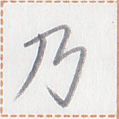 | quantity unit | | ~th ~ |
| 日 | kia1 | 日 | | temporal word | | day |
| 下3 | ut2 | 下 | | noun-modifier | | next |
| 月 | xem1 | 月 |  | noun | | month |
| 天風 | syt2 pua2 | 天風 | | noun | | weather |
| 須多 | ly taun1 | 須多 | | verb | | to be busy |
| 於0 | ie | 於 | | coverb | | at {someone's} place |
| 須多2 | ly taun1 | 須多 | | noun | | obligation / task / what one is busy about / what one must do |
| 春 | iei2 | 春 |  | noun | | Yay (name) |
| xizi | xizi | xizi |   | noun suffix | | Mr. ..., Ms. ... |
| 於dur | ie | 於 | | coverb | takes a time | during, for |
| 十 | nun1 | 十 |  | noun-modifier | numeral | ten |
| 入力 | lit1 py {ie N} | 入力 {於N} |  {N} {N} | verb | | to put effort {into N} |
| 心4 | hia1 | 心 | | clause-taker | | to think that |
| 真 | put | 真 |  | verb | | to be true |
| 彼2 | zap2 | 彼 | | noun-modifier | | his/her |
| 在6 | aim2 | 在 | | verb | takes a place | to be at |
| 識 | can2 | 識 | | verb | | to know |
| 牌言 | pek2 zep1 | 牌言 |  | noun | | Pekzep |
| 筆2 | kua2 | 筆 | | verb | | to write |
| 術 | sit1 | 術 |  | noun | | method |
| 勿論 | nau zui1 | 勿論 |   | interjection | | of course |
| 其 | ze1 | 其 |  | noun | | that |
| 清字 | lin man1 | 清字 |   | noun | | Linzklā character |
| 学友 | nui2 hi1 | 学友 | | noun | | classmate |
| 銭無 | su1 mun1 | 銭無 | | verb | | to have no money |
| 終而 | ta ua | 終而 | | sentence-modifier | | in the end |
| xizi噫 | xizi a | xizi噫 | | interjection | | excuse me |
| 手言機 | hop1 zep1 kik1 | 手言機 |   | noun | | cell phone |
| 生銭 | ian1 su1 {ie N} | 生銭 {於N} |  {N} {N} | verb | | to buy {N} |
| 於q | ie | 於 | | coverb | | ? |
| 生 | ian1 | 生 | | verb | | to go out |
| 再来 | ty sak2 | 再来 |  | verb | takes a place | to return to |
| 上学処 | sau2 nui2 hue | 上学処 |  | noun | | university |
| 使 | sui1 | 使 |  | verb | | to use |
| 極2 | kit | 極 | | noun-modifier | | a lot of |
| 母 | mam1 | 母 | 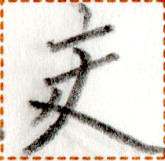 | noun | | mother |
| 待 | tim1 | 待 |  | clause-taker | | to wait for A to V |
| 心 // 故 | hia1 // xit2 | 心 // 故 {於N} | // {N} | verb-object compound | | to ask {someone} |
| 言言 | zep1 zep1 | 言言 | | noun | | phrase |
| 意 | xa2 | 意 |  | noun | | meaning |
| 於3 | ie | 於 | | coverb | | in such a way |
| 衣 | tak1 | 衣 |  | noun | | clothing |
| 琴 | lia1 | 琴 |  | noun | | Lia (name) |
| 心善2 | hia1 kait | 心善 | | clause-taker | | to like to |
| 使銭 | sui1 su1 | 使銭 | | verb | | to buy |
| 心善於別 | hia1 kait ie pau1 | 心善於別 |  | clause-taker | | to prefer to |
| 唯 | tet | 唯 |  | verb-modifier | | only |
| 一2 | et2 | 一 | | noun | | one thing |
| 二 | ik2 | 二 |  | noun | | two things |
| 冠国2 | ai2 sip1 | 冠国 | | noun-modifier | | Ai'ren Republic's |
| 地心 | huep2 hia1 | 地心 |  | noun | | culture |
| 淮国2 | uep1 sip1 | 淮国 | | noun-modifier | | Vefisait Republic's |
| 毎毎 | tut1 tut1 | 毎毎 |  | noun-modifier | | each one's |
| 開銭処 | nam2 su1 hue | 開銭処 |  | noun | | open-air market |
| 哩言 | lip zep1 | 哩言 |  | noun | | Linepāine |
| 始 | hut2 | 始 |  | coverb | takes a time / place | beginning from, from |
| 等 | ge | 等 | | noun suffix | | (plural) |
| 於4 | ie | 於 | | coverb | | because of |
| 哩言2 | lip zep1 | 哩言 | | noun-modifier | | of Linepāine |
| 風在2 | pua2 aim2 {ie N} | 風在 {於N} | {N} | verb | | for N to be interesting |
| 硬 | pek1 | 硬 |  | verb | | to be difficult |
| xizi xizi | xizi xizi | xizi xizi | | interjection | | excuse me |
| 四 | ap1 | 四 |  | noun-modifier | numeral | four |
| 星 | pet2 | 星 |  | temporal word | | year |
| 全2 | be1 | 全 | | noun-modifier | | all |
| 識3 | can2 | 識 | | clause-taker | | to know that |
| 善5 | kait | 善 | | verb-modifier | | well, proficiently |
| 心 // 闇 | hia1 // huet | 心 // 闇 | //  | verb-object compound | | to be tired |
| 行5 | mok1 | 行 | | clause-taker | | to become |
| 別普 | pau1 huai2 | 別普 |  | verb-modifier | | especially |
| 倉 | li1 | 倉 |  | noun | | computer |
| 筆処 | kua2 hue | 筆処 | | place word | | Quahua (a large city in Ai'ren Republic) |
| 心道 | hia1 po1 | 心道 |  | noun | | the desired way |
| 勿心 | nau hia1 | 勿心 | | interjection | | no need to care about it |
| 目 | ta1 | 目 | | verb | | see |
| 行絵 | mok1 lek1 | 行絵 |  | noun | | movie |
| 来4 | sak2 | 来 | | verb | | to be open to public and reach us |
| 待2 | tim1 | 待 | | verb | | to wait for |
| 片 | zuo1 | 片 | | quantity unit | | percent-day |
| 行 // 星周 | mok1 // pet2 cei2 | 行 // 星周 | // | verb-object compound | | to age ~ years |
| 同2 | bap | 同 | | noun-modifier | | the same |
| 高 | sue1 | 高 |  | noun | | Zwuh (name) |
| 少 // 星 | hue1 // pet2 | 少 // 星 | // | verb-object compound | | to be ~ years younger |
| 二2 | ik2 | 二 | | noun-modifier | numeral | two |
| 於5 | ie | 於 | | coverb | | compared to |
| 皇 | tam2 | 皇 |  | noun | | Tam (name) |
| 定 | huap1 | 定 |  | verb | | to be ready |
| 目 // 書 | ta1 // ak1 | 目 // 書 | // | verb-object compound | | to read books |
| 父 | kuak1 | 父 |  | noun | | father |
| 論 | zui1 | 論 | | verb | | to discuss |
| 心善於 | hia1 kait ie | 心善於 | | clause-taking interjection | | thank you for |
| 助 | uaip2 | 助 |  | verb | | to help |
| 無3 | mun1 | 無 | | verb | | to not exist |
| 少時 | hue1 kak | 少時 | | temporal word | | a moment |
| 心善3 | hia1 kait | 心善 | | interjection | | thank you |
| 多2 | taun1 | 多 | | verb | | to be plentiful |
| 助2 | uaip2 | 助 | | clause-taker | | to help A V |
| 心受2 | hia1 guk2 | 心受 | | verb | | to need |
| 助3 | uaip2 | 助 | | noun | | help |
| 受 // 裁学 | guk2 // xy1 nui2 | 受 // 裁学 | //  | verb-object compound | | to take an exam |
| 層 | gy1 | 層 |  | noun | | story (of a building) |
| 試 | kop1 | 試 |  | verb | | to try |
| 識 // 心 | can2 // hia1 | 識 // 心 | // | verb-object compound | | to understand [someone] |
| 日日 | kia1 kia1 | 日日 | | temporal word | | every day |
| 生寝 | ian1 hok1 | 生寝 | 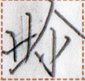 | verb | | to get up |
| 下時 | ut2 kak | 下時 | | temporal word | | late time |
| 口 // 水 | iam1 // nua2 | 口 // 水 | //  | verb-object compound | | to drink |
| 百 | kit1 | 百 |  | noun-modifier | numeral | a hundred |
| 銭3 | su1 | 銭 | | noun | | zooh |
| 在7 | aim2 | 在 | | verb | | to be at {someone's} place |
| 水類 | nua2 suo2 | 水類 |  | noun | | liquid |
| 少2 | hue1 | 少 | | noun-modifier | | a little |
| 激 | gak1 | 激 |  | post-verbial / sentence-final particle of manner | | quickly |
| 在行 | aim2 mok1 | 在行 | | verb-modifier | aspect marker | to continue to |
| 認 | hio1 | 認 |  | clause-taker | | to accept that |
| 定2 | huap1 | 定 | | noun | | decision |
| 男 | ki1 | 男 |  | noun | | male |
| 心無之 | hia1 mun1 a | 心無之 | | verb-modifier | | casually |
| 生行 | ian1 mok1 | 生行 | | verb | | to leave |
| 集 | dat2 | 集 |  | noun | | city |
| 手 | hop1 | 手 | | verb | | to hold |
| 立 | lo | 立 |  | verb | | to stand |
| 試2 | kop1 | 試 | | clause-taker | | to try to |
| 力2 | py | 力 | | verb | | to be able to do {something} |
| 力3 | py | 力 | | clause-taker | | allow (oneself) to V |
| 為 // 件 | zau // uo1 | 為 // 件 | // | verb-object compound | | to do thing |
| 類 | suo2 | 類 | | subordinating particle | | ~ kind of ~ |
| 此3 | ka1 | 此 | | nominative case marker | | as for ..., it ... |
| 端 | tau2 | 端 |  | noun | | limit |
| 国 | sip1 | 国 | | noun | | country |
| 一下 | et2 ut2 | 一下 | | noun-modifier | | next |
| 道 | po1 | 道 | | noun | | possibility |
| 件 | uo1 | 件 | | noun | | matter, affair |
| 亦 | y | 亦 |  | conjunction | | or |
| 無2 | mun1 | 無 | | interjection | | no |
| 闇人 | huet cuk2 | 闇人 | | noun | | Phētās |
| 新 | lu2 | 新 |  | noun-modifier | | new |
| 手術 | hop1 sit1 | 手術 | | noun | | how to choose |
| 別 | pau1 | 別 | | noun | | other thing |
| 言術 | zep1 sit1 | 言術 | | noun | | way of talking |
| 使言機言 | sui1 zep1 kik1 zep1 | 使言機言 | | verb | | to make a phone call to |
| 言機 | zep1 kik1 | 言機 | | noun | | telephone |
| 寝銭処 | hok1 su1 hue | 寝銭処 | | noun | | hotel |
| ∅3 | ∅ | ∅ | | verb | takes a place | to be located in |
| 時 | kak | 時 | | temporal word | requires a modifier | time |
| 互言 | huat1 zep1 | 互言 |  | verb | | to converse |
| 善6 | kait | 善 | | clause-taker | | to be welcome to |
| 口銭処 | iam1 su1 hue | 口銭処 | | place word | | restaurant |
| 識善 | can2 kait | 識善 | | verb | | to be smart |
| 真2 | put | 真 | | verb-modifier | | truly |
| 在手 | aim2 hop1 | 在手 | | verb | | to own |
| 労処 | naip2 hue | 労処 | | place word | | workplace |
| 男子 | ki1 kat1 | 男子 |  | noun | requires a modifier | son |
| 三 | om2 | 三 |  | noun-modifier | numeral | three |
| 周2 | cei2 | 周 | | verb | takes a place | to be close to |
| 杯 | niep1 | 杯 | 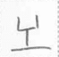 | quantity unit | | ~ glass of ~ |
| 水 | nua2 | 水 | | noun | | water |
| 言 // 周 | zep1 // cei2 | 言 // 周 {N} | // {N} | verb-coverb compound | | to introduce {someone} |
| 長 | auk2 | 長 |  | verb | | to be long |
| 長2 | auk2 | 長 | | noun | | length |
| 三十 | om2 nun1 | 三十 | | noun-modifier | numeral | thirty |
| 片2 | zuo1 | 片 | | quantity unit | | tswoh (5.54 cm; 2.18 inches) |
| 反言 | i2 zep1 | 反言 |  | verb | | to answer |
| 善7 | kait | 善 | | verb | | good, proficient |
| 雪季 | let1 xot1 | 雪季 |   | noun | | Leshēl (name) |
| 笛琴 | lok1 lia1 | 笛琴 |  | noun | | music |
| 心 // 真 | hia1 // put | 心 // 真 | // | verb | | to believe |
| 行 // 道 | mok1 // po1 | 行 // 道 | // | verb-object compound | | to conform to |
| 心5 | hia1 | 心 | | noun | | feeling, mind |
| 足行 | xi1 mok1 | 足行 |  | verb | | to walk |
| 静 | na1 | 静 |  | post-verbial / sentence-final particle of manner | | slowly |
| 龍意 | hui2 xa2 | 龍意 | 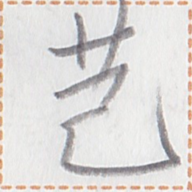 | noun | | Fisha (name) |
| 汝等 | mua2 ge | 汝等 | | noun | | you guys, you all |
| 言意 | zep1 xa2 | 言意 | | noun | | meaning of what someone says |
| 古論 | sia1 zui1 | 古論 |  | noun | | story, folklore |
| 全下 | be1 ut2 | 全下 | | temporal word | | at last |
| 謎 | xep2 | 謎 |  | noun | | problem, question |
| 少3 | hue1 | 少 | | verb-modifier | | a little |
| 目行 | ta1 mok1 | 目行 | | verb | | to look into (both literally and figuratively) |
| 謎故 | xep2 xit2 | 謎故 | | noun | | problem |
| 急行 | sam1 mok1 | 急行 |  | verb | | to run |
| 全上 | be1 sau2 | 全上 | | noun | | best thing |
| 挽虫 | hua1 li2 | 挽虫 |   | noun | | Falīa (name) |
| 道2 | po1 | 道 | | noun | | road |
| 極極 | kit kit | 極極 | | verb-modifier | intensifier | extremely |
| 善善 | kait kait | 善善 | | verb | | to be great |
| 律 | iak1 | 律 |  | noun | | Yark (name) |
| 夏 | xo1 | 夏 |  | noun | | Show (name) |
| 何時片 | nan2 kak zuo1 | 何時片 | | temporal word | interrogative | which percent-day |
| 銭軸 | su1 la1 | 銭軸 |  | noun | | company |
| 物 | ku | 物 | | noun | | thing |
| 加2 | at | 加 | | noun-conjunction | | and |
| 同3 | bap | 同 | | verb | | to be the same |
| 何星 | nan2 pet2 | 何星 | | temporal word | interrogative | how many years |
| 叮止 | tei1 muo1 | 叮止 |   | noun | | bus stop |
| 此故 | ka1 xit2 | 此故 | | conjunction | | the reason is that |
| 唯心 | tet hia1 | 唯心 | | clause-taker | | to wish that |
| 下女輩 | ut2 sa1 huok1 | 下女輩 |   | noun | | younger sister |
| 遊刀銭処 | tu2 gau2 su1 hue | 遊刀銭処 | 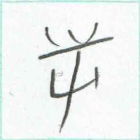 | noun | | toy store |
| 怖 | zat1 | 怖 |  | verb | | to be scared of |
| 高処 | sue1 hue | 高処 | | place word | | heights, high place |
| 我等2 | pai2 ge | 我等 | | noun-modifier | | our |
| 其2 | ze1 | 其 | | noun-modifier | | that |
| 終入 | ta lit1 | 終入 | | verb | | to shut down, to stop operating, to disappear |
| 銭倉 | su1 li1 | 銭倉 | | noun | | bank |
| 無4 | mun1 | 無 | | noun | | nothing |
| 行6 | mok1 | 行 | | coverb | | till, until |
| 値 | mak2 | 値 |  | noun | | number |
| 豊於 | ho1 ie | 豊於 |  | verb | | to be full of |
| 天与 | syt2 tui2 | 天与 | | noun | | talent |
| 再識来 | ty can2 sak2 | 再識来 | | verb | | to remember |
| 再識来2 | ty can2 sak2 | 再識来 | | clause-taker | | to remember that |
| 名 | sin1 | 名 | 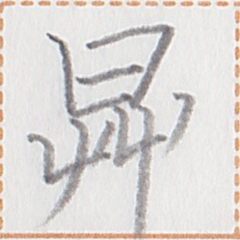 | noun | | name |
| 軟2 | ho | 軟 |  | verb-modifier | | easily |
| 心闇2 | hia1 huet | 心闇 | | noun | | tiredness |
| 受 | guk2 | 受 | | verb | | to obtain |
| 軟 | ho | 軟 | | verb | | to be easy, to be simple |
| 言書 | zep1 ak1 | 言書 | | noun | | dictionary |
| 於6 | ie | 於 | | coverb | | in {someone's} viewpoint, as for {someone} |
| 於何時 | ie nan2 kak | 於何時 | | post-verbial / sentence-final particle | | how many times |
| 何時長 | nan2 kak auk2 | 何時長 | | temporal word | interrogative | how long |
| 言生於 | zep1 ian1 ie | 言生於 | | verb | | to introduce to {someone} |
| 母父 | mam1 kuak1 | 母父 | | noun | | parents |
| 星豊 | pet2 ho1 | 星豊 | | verb | | to be old |
| 門片 | giau1 zuo1 | 門片 |  | noun | | visa |
| 上時 | sau2 kak | 上時 | | temporal word | | past |
| 錘 | xo2 | 錘 |  | verb | | to be important |
| 光島 | aik2 dop1 | 光島 |   | noun | | Ekadon island |
| 花 | xuo1 | 花 |  | noun | | flower |
| 嗅善 | cai1 kait | 嗅善 |  | verb | | to smell good |
| 寝 | hok1 | 寝 | | verb | | to be asleep |
| 遠 | tuai2 | 遠 {於L} | 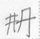 {L} | verb | | to be far {from L} |
| 如3 | em | 如 | | verb-modifier | | seemingly |
| 勿 | nau | 勿 | | imperative-verb-modifier | | I ask you not to |
| 手2 | hop1 | 手 | | clause-taker | | to hold so that S V |
| 門 | giau1 | 門 | | noun | | door |
| 開 | nam2 | 開 | | verb | | open |
| 上下 // 終無 | sau2 ut2 // ta mun1 | 上下 // 終無 | // | compound | | forever |
| 裁 // 同 | xy1 // bap | 裁 // 同 {N} | // {N} | verb-coverb compound | | to treat ... as N |
| 美 | hem1 | 美 |  | verb | | to be beautiful |
| 字 | man1 | 字 | | noun | | character, letter, alphabet |
| 識善2 | can2 kait | 識善 | | verb | | to understand [something] well |
| 清 | lin | 清 | | verb | | to be flawless and beautiful |
| 女子 | sa1 kat1 | 女子 | | noun | requires a modifier | daughter |
| 周3 | cei2 | 周 | | verb | | to turn to a direction |
| 右 | ky1 | 右 | 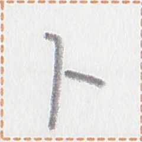 | noun | | right (direction) |
| 車 | kaun1 | 車 |  | noun | | car |
| 別2 | pau1 | 別 | | coverb | | except for, excluding |
| 酒 | no1 | 酒 |  | noun | | alcohol |
| 加3 | at | 加 | | verb | | to add |
| 之3 | a | 之 | | subordinating particle | | (apposition) |
| 翰 | kuai1 | 翰 |  | noun | | Kwai (name) |
| 下 // 目水 | ut2 // ta1 nua2 | 下 // 目水 | // | verb-object compound | | cry |
| 心真於 | hia1 put ie | 心真於 | | verb | | to believe |
| 囲 | pia2 | 囲 |  | noun | | room |
| 囲値 | pia2 mak2 | 囲値 | | noun | | room number |
| 裁学 | xy1 nui2 | 裁学 | | noun | | exam |
| 始2 | hut2 | 始 | | verb | | to begin |
| 始3 | hut2 | 始 | | clause-taker | | to begin to |
| 満 | bo1 | 満 |  | verb | | to be full, to be satisfied |
| 行絵箱 | mok1 lek1 bu1 | 行絵箱 |  | noun | | television |
| 全闇 | be1 huet | 全闇 | | temporal word | | all night |
| 歌 | xau1 | 歌 |  | verb | | to sing |
| 歌2 | xau1 | 歌 | | noun | | song |
| 銭処 | su1 hue | 銭処 | | noun | | shop, store |
| 即 | hem | 即 | 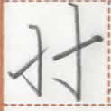 | conjunction | | then |
| 壊 | mot2 | 壊 |  | verb | | to die |
| 心来如 | hia1 sak2 em | 心来如 | | clause-taker | | to feel like |
| 貧 | hei2 | 貧 |  | verb-modifier | | a little bit |
| 小 | ni1 | 小 | 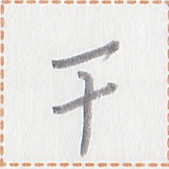 | noun-modifier | | small, little |
| 犬 | pa2 | 犬 |  | noun | | dog |
| 激激 | gak1 gak1 | 激激 | | post-verbial / sentence-final particle of manner | | very very quickly |
| 月2 | xem1 | 月 | | noun | | Shum (name) |
| 口物2 | iam1 ku | 口物 | | noun | | food |
| 亦無 | y mun1 | 亦無 | | interjection | | isn't it? / no? / doesn't he? |
| 失 | zip1 | 失 |  | verb | | to lose |
| 唯2 | tet | 唯 | | noun-modifier | | only |
| 心善4 | hia1 kait | 心善 | | verb | | to be happy |
| 真件 | put uo1 | 真件 | | noun | | news |
| 心善之 | hia1 kait a | 心善之 | | verb-modifier | | happily |
| 多3 | taun1 | 多 | | post-verbial / sentence-final particle of manner | | hard, with effort |
| 毎 | tut1 | 毎 | | noun | requires a modifier | each |
| 一上日 | et2 sau2 kia1 | 一上日 | | temporal word | | yesterday |
| 始4 | hut2 | 始 | | verb | takes a place | to leave |
| 男下輩 | ki1 ut2 huok1 | 男下輩 | | noun | | younger brother |
| 同4 | bap | 同 | | coverb | | as much as |
| 上星 | sau2 pet2 | 上星 | | quantity unit | | ~ years ago |
| 互心 | huat1 hia1 | 互心 | | noun-modifier | | pertaining to love |
| 謝 | kuai1 | 謝 | 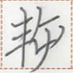 | verb | | to apologize |
| 無真 | mun1 put | 無真 | | noun | | lie, false information |
| 来5 | sak2 | 来 | | post-verbial particle | | movement-marker of arrival |
| 六 | net2 | 六 |  | noun-modifier | numeral | six |
| 言言 // 周 | zep1 zep1 // cei2 | 言言 // 周 {N} | // {N} | verb-coverb compound | | to introduce {someone} |
| 目機 | ta1 kik1 | 目機 | | noun | | camera |